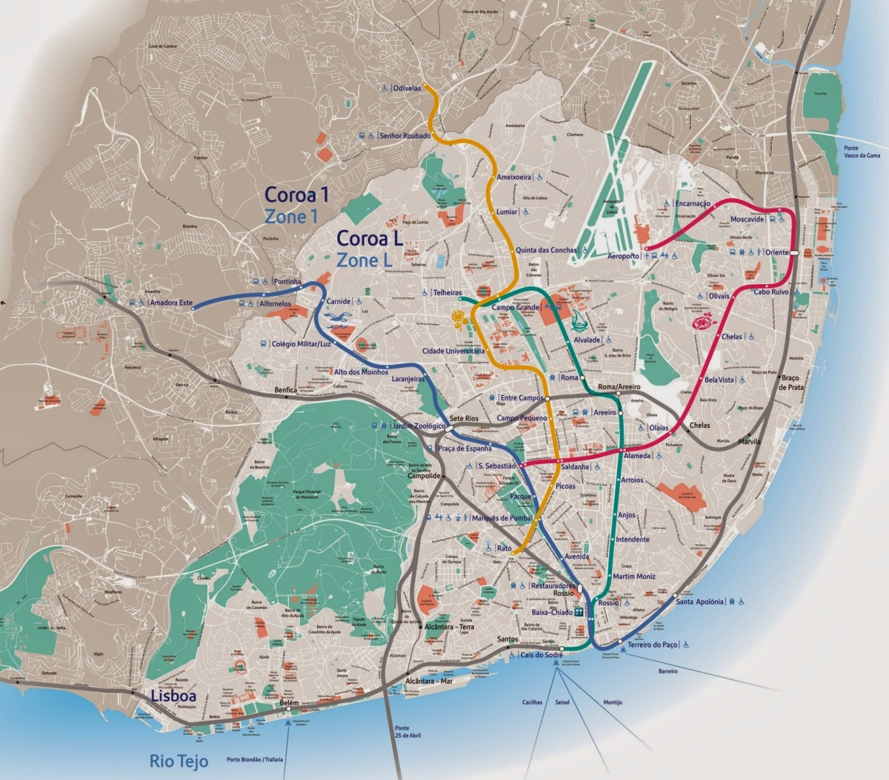
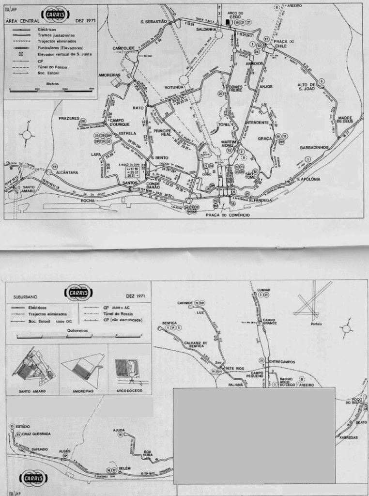
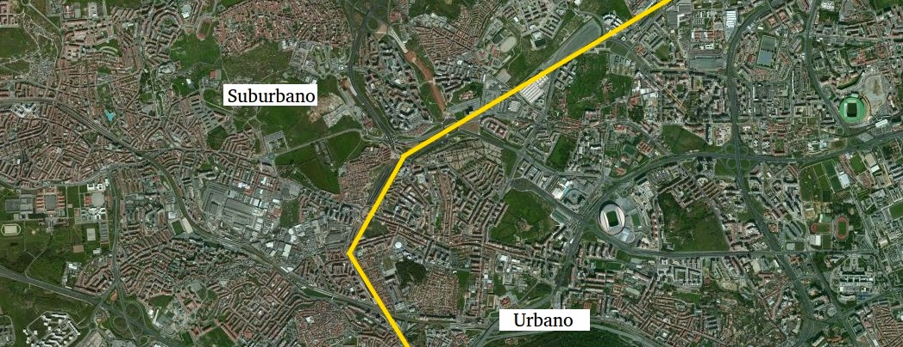
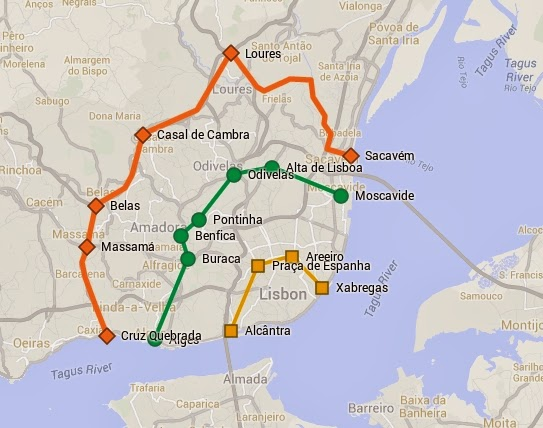

Notes From The Underground - VII
[Pay Attention]
For the average person, their consumption habits aren't deliberate, their digital environment is on default, and there are a thousand things competing for their attention.
Prolific creators, on the other hand, have gone out of their way to eliminate the competition for their attention and made deep work a big priority in their life.
It takes continuous attention and intense focus to perform at an elite level.
Without the ability to focus on something demanding for an extended period, you're at a disadvantage.
Your attention is worth a fortune. The founders of the major social networks, what author Tim Wu calls the "attention merchants", have become billionaires by getting you addicted to their services and selling your attention to advertisers.
It's worth asking if the amount of your attention you're spending on these digital things is getting you what you want.
If you're convinced that you should be spending your attention on more worthwhile pursuits, it's not enough to implement a bunch of hacks because vague resolutions are not sufficient to tame the ability of new technologies to invade your cognitive landscape- the addictiveness of their design and strength of the cultural pressures supporting them are too strong for an ad hoc approach to succeed.
In other words, all the solutions we use to deal with distractions are band-aids on bullet wounds.
This is why the most effective way to become a digital minimalist is to just quit.
Shallow work like checking email, updating your status or uploading pictures feels productive, but it's not. Run them through this framework: 1 – Is this vital? 2 – Does this matter? 3 – What would happen if I didn't do it?
These things usually aren't vital, don't matter, and nothing would happen if you didn't do them.
I haven't uploaded a picture to Instagram in weeks. Guess what? Nobody cared.
Srinivas Rao (2019)
The quality of life you want for yourself ultimately comes down to how you spend your time and what you give your attention to.
Time is the most valuable asset you have. It's a non-renewable resource you can never get back.
At my very first internship at a startup, the CFO asked me, "Why do you want to make a lot of money?" As a 20-year-old, I rattled off the list of luxuries I was imagining (Ferraris, McMansions, jets, etc).
He said, "You're wrong. What money buys is time. Time is what's really valuable."
Yet people wait to start a business, a project or pursue a dream as if they have all the time in the world.
They waste time doing things they hate or suck at doing. They think there's some mythical date in the future when the conditions will be perfect; the stars will align;, and they'll have enough money in the bank or time to spend on their art.
But the only thing that changes when you wait is that time passes. In order to use your life-fixed time effectively, you need to pay Attention.
It determines the state of our lives, and is under constant assault from social media, inboxes, text messages, pings, pops and buzzes.
Think of your attention as credit that you have every day after waking up and when you spend it on sources of distraction, you don't have it anymore to yours other more meaningful pursuits.
If you want to improve your attention span, start by reducing the competition for it.
If it's not relevant to the task at hand, remove it from your environment. Drown out the sound with some noise cancellation headphones.
And design an environment that's free of distractions.
Srinivas Rao (2019)
[A Linha Urbana de Lisboa]
   
Existe um consenso atualmente que a linha suburbana é imutável e que serve basicamente para separar o município de Lisboa (o urbano) dos restantes da Área Metropolitana (os subúrbios).
Essa visão está espelhada no mapa de 2014 do Metropolitano de Lisboa:
(2014)
[America’s White Saviors]
A sea change has taken place in American political life.
The force driving this change is the digital era style of moral politics known as "wokeness," a phenomenon that has become pervasive in recent years and yet remains elusive as even experts struggle to give it a clear definition and accurately measure its impact.
Where did it come from? What do its adherents believe? Is it just something happening inside the Twitter bubble and on college campuses or is it really spreading across the social and cultural landscape and transforming the country as sometimes appears to be the case?
In reality, "wokeness"is a broad euphemism for a more narrow phenomenon: the rapidly changing political ideology of white liberals that is remaking American politics.
Over the past decade, the baseline attitudes expressed by white liberals on racial and social justice questions have become radically more liberal.
In one especially telling example of the broader trend, white liberals recently became the only demographic group in America to display a pro-outgroup bias—meaning that among all the different groups surveyed white liberals were the only one that expressed a preference for other racial and ethnic communities above their own.
Matthew Yglesias described this ongoing transformation as The Great Awokening: "In the past five years, white liberals have moved so far to the left on questions of race and racism that they are now, on these issues, to the left of even the typical black voter."
There is no simple or single explanation for how this process got started.
It appears to be driven by an interplay of factors: preexisting tendencies among white liberals; a series of polarizing events like the police shooting of Michael Brown and subsequent riots in Ferguson, and the migrant crisis; the rise of millenials as a political force, and the explosion of social media and "woke" clickbait journalism.
The years between 2012 and 2016 were a watershed for white liberal racial consciousness. As white liberals have come to place far greater emphasis on racial injustice, they have also endorsed reparative race-related social policies in greater numbers.
This is evident across a range of issues: the rapid growth in white liberals who favor affirmative action for blacks in the labor force; in the increase in white liberals who feel that we spend too little on helping blacks, and that the government should afford them special treatment; in the increase in white Democrats who think it's the government's job to ensure "equal income across all races"; and in the increase in white liberals and Democrats who think that white people have 'too much' political influence.
An example of how these psychological characteristics and moral foundations can be manifested in politics and policy can be seen in the white responses to measures of empathy toward racial and ethnic minorities.
Remarkably, white liberals were the only subgroup exhibiting a pro-outgroup bias—meaning white liberals were more favorable toward nonwhites and are the only group to show this preference for group other than their own.
Indeed, on average, white liberals rated ethnic and racial minority groups 13 points (or half a standard deviation) warmer than whites.
This disparity in feelings of warmth toward ingroup vs. outgroup is even more pronounced among whites who consider themselves "very liberal" where it widens to just under 20 points.
Notably, while white liberals have consistently evinced weaker pro-ingroup biases than conservatives across time, the emergence and growth of a pro-outgroup bias is actually a very recent, and unprecedented, phenomenon.
Not surprisingly, data from the American National Elections Studies (ANES) shows white liberals scoring significantly higher on measures of 'white privilege awareness' and 'white guilt'.
Previous research has shown that these collective moral emotions, triggered by historical wrongdoing and perceptions that an in-group's advantages and privileges are illegitimate, can can increase support for reparative and humanitarian social policies.
That is exactly what has happened in recent years as white liberals have become increasingly supportive of affirmative action, reparations, and increased immigration.
An analysis of GoogleTrends data shows that the frequency of searches for race-related and "woke" terms has grown substantially since the beginning of the decade—a period that happens to coincide with the social media boom and the emergence of so-called hashtag activism (e.g., Occupy Wall Street, Black Lives Matter).
This period also saw the rise of the Huffington Post—an online progressive blog and news site that prolifically opines on race-related issues.
Whereas just 13% of white liberals reported regularly visiting the site in 2012, over 30% did in 2016.
A similar pattern is observed for digital readership of The New York Times (NYT), which grew from 16% to 31% among white liberals between 2012 and 2016—during this same period, according to a recent content analysis I conducted—the percentage of Times articles mentioning race-related and woke terms saw unprecedented growth.
For instance, whereas just 0.4% (or 334) of articles referred to racism in 2012, this figure had doubled by 2015 (to 0.87% or 813) and reached over 2% (or 2,353) by 2018.
Interestingly, the number of monthly NYT articles mentioning racism also closely tracks Google search interest in the term.
Unfortunately, the outrage delivered through digital media tends to distort this vital perspective.
America is perceived as incorrigibly unjust, racist, and in need of radical transformation. Compounding this, the perception of benefiting from such iniquity through white privilege naturally produces heightened feelings of guilt, anger, and an empathic desire "to do something" to help the suffering, or to at least signal one's moral virtue to others.
It's the frustration with white conservatives' inability or reluctance to keep pace with white liberals on the path to enlightenment that is intensifying our political divide.
But conservatives tend toward normative and structural stability. They don't take well to rapid social change.
The perceived imposition and spread of progressive norms naturally elicits psychological reactance—a visceral desire to resist and affirm one's agency in the face of perceived social pressure.
This is the very process that is at least partly responsible for the election of Trump.
Resentment of those seen as standing in the way of necessary social and cultural change may inspire a commitment to what political scientist Eric Kaufman calls "multicultural millenarianism": the belief that the demise of a white majority will pave the way for a more racially progressive and just society.
Perhaps this is why white support for increasing immigration coincides with more negative feelings toward whites.
Whatever the case, such sentiment would have been hard to fathom 10-20 years ago. The digitalization of moral outrage that makes it possible today could, with the pace of innovation, make it even more potent in the years to come.
Zach Goldberg (2019)
[Where Money Comes From]
We still tell kids to go to school, get a job, work hard, save money and get out of debt. Now, who tells them to do that? That's the most ridiculous thing there is! Why would you save it and why would you work for it, if they can print it faster than you can work for it!
[Robert Kiyosaki (2017)]